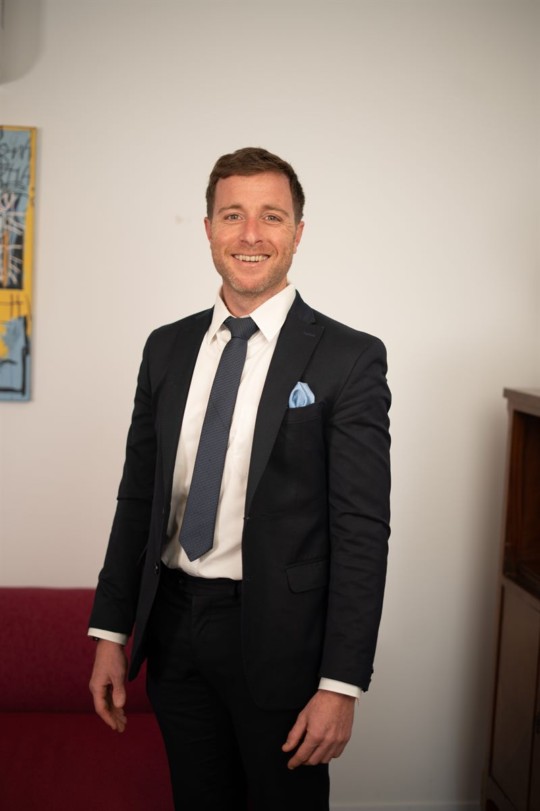
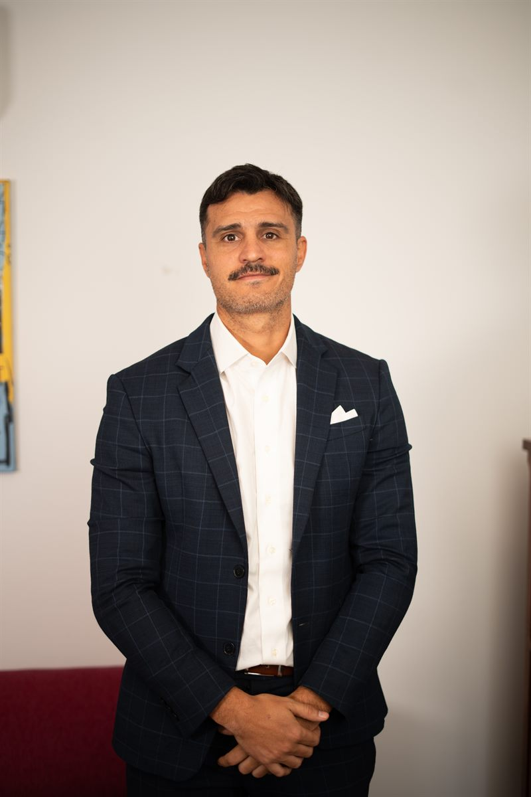

Abogados en La Plata
Estudio jurídico con atención en La Plata, CABA y Provincia de Buenos Aires: conflictos laborales y ART, sucesiones, daños y asesoramiento a empresas.
- Más de diez años de trayectoria
- Atención directa del estudio
- Evaluación inicial del caso

Áreas de trabajo
-
Derecho Laboral y ART
Asesoramos tanto a trabajadores como a empleadores: accidentes de trabajo, reclamos ante ART y situaciones laborales.
Consultar -
Sucesiones
Acompañamiento para iniciar, continuar o destrabar una sucesión con una mirada práctica sobre los pasos a seguir.
Consultar -
Asesoramiento Empresarial
Seguimiento legal para empresas: contratos, prevención de conflictos, decisiones comerciales y temas societarios.
Consultar -
Derecho de Daños
Análisis de reclamos por daños, responsabilidades y documentación necesaria para evaluar los pasos posibles.
Consultar -
Derecho Comercial
Asesoramiento en contratos, operaciones comerciales, sociedades, reclamos y decisiones legales vinculadas a la actividad empresaria.
Consultar -
Derecho Administrativo
Trámites y reclamos ante organismos públicos, gestiones administrativas y respuestas a intimaciones o sanciones.
Consultar
El estudio
BOQV Abogados es el estudio de Berridi, Ortiz Quesada & Vaccari: servicios legales integrales para personas, familias y empresas, con atención directa.
Una forma de trabajo enfocada en escuchar, ordenar y responder con claridad, con evaluación inicial de cada caso.
-

Juan Cruz Berridi
Derecho laboral y administrativo
-

Alvaro Ortiz Quesada
Derecho comercial
-
Maximiliano Vaccari
Derecho de daños y sucesiones
¿Cómo trabajamos?
Primero entendemos tu caso, después evaluamos el camino. Así queda ordenado desde el primer mensaje.
-
Contás
Completás el formulario o enviás un mensaje con los datos principales.
-
Revisamos
Identificamos la información relevante y qué documentación puede hacer falta.
-
Respondemos
Coordinamos un primer contacto para orientarte sobre los próximos pasos.
Contanos tu caso
Compartinos tus datos y una breve descripción. El estudio revisa la información para coordinar una respuesta inicial.
+54 9 2215 94-2574 administracion@boqv.com.ar Calle 12 N°623, Piso 1 Oficina 2, La PlataPreguntas frecuentes
¿En qué zonas atiende BOQV?
El estudio atiende consultas vinculadas a La Plata, Ciudad Autónoma de Buenos Aires y Provincia de Buenos Aires.
¿Qué áreas trabaja el estudio?
Derecho comercial, derecho laboral y ART, derecho administrativo, derecho de daños, sucesiones y asesoramiento empresarial.
¿Atienden a trabajadores y a empleadores?
Sí. En derecho laboral y ART asesoramos tanto a trabajadores como a empleadores.
¿Cómo es el primer contacto?
Completás el formulario o escribís por WhatsApp. Revisamos la información y coordinamos un primer contacto para orientarte sobre los próximos pasos.
¿La consulta garantiza un resultado?
No. Cada caso requiere una evaluación particular. El primer contacto sirve para ordenar la información y orientar los próximos pasos.